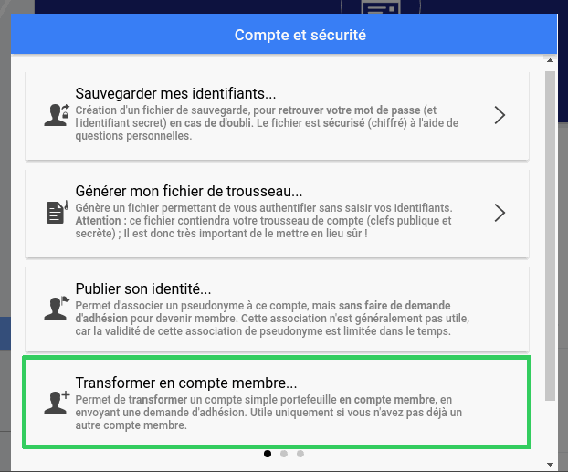

¿Cómo transformar un monedero simple en una cuenta miembro?
Convierte una cuenta de "monedero simple" en una "cuenta miembro"
Dirígete a "Mi cuenta", luego a "Opciones" y luego a "Cuenta y seguridad".
Después haz clic en "Convertir a cuenta de miembro..."

¿Por qué hacerse miembro?
Convertirse en miembro te permitirá:
- Convertirte en un co-creador de la moneda
- Certificar a otros usuarios o miembros
Si tienes algún problema o tienes alguna pregunta, puedes pedir ayuda aquí: